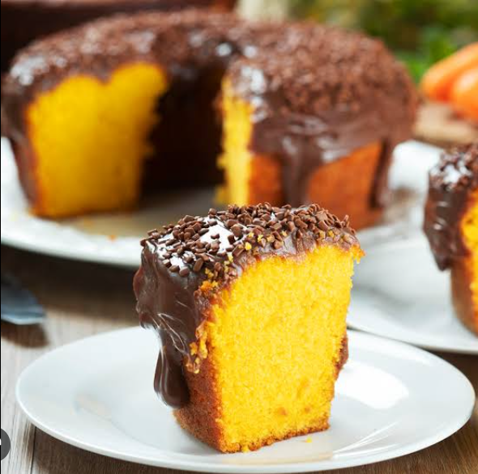

Receita de bolo de cenoura
Ingredientes para Massa: 3 ovos, 275g de açúcar, 150ml de óleo, 200g de cenoura, 200g de farinha e 1 colher de sopa de fermento.
Ingredientes para Cobertura: 1 leite condensado, 1 creme de leite, 1 colher de sopa de manteiga, achocolatado e 1 pitada de sal.
Modo de Preparo: No liquidificador, bater o açúcar, ovos, óleo e as cenouras por 2 a 3 minutos, depois, coloque o líquido em um recipiente, acrescente farinha e misture muito bem, adicione o fermento, misture devagar. Unte uma forma com manteiga e farinha, despeje a massa na forma e leve ao forno a 180° por 50 minutos.
Para a Cobertura: Misture todos os ingredientes em uma panela, ligue o fogo médio/alto e mexa até chegar no ponto de cobertura.
